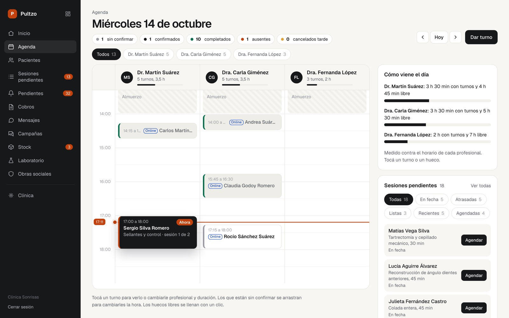
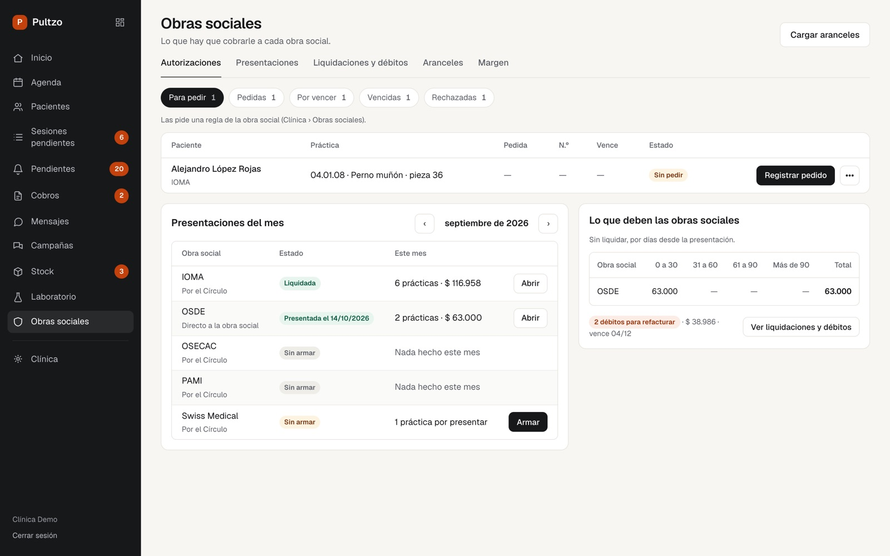
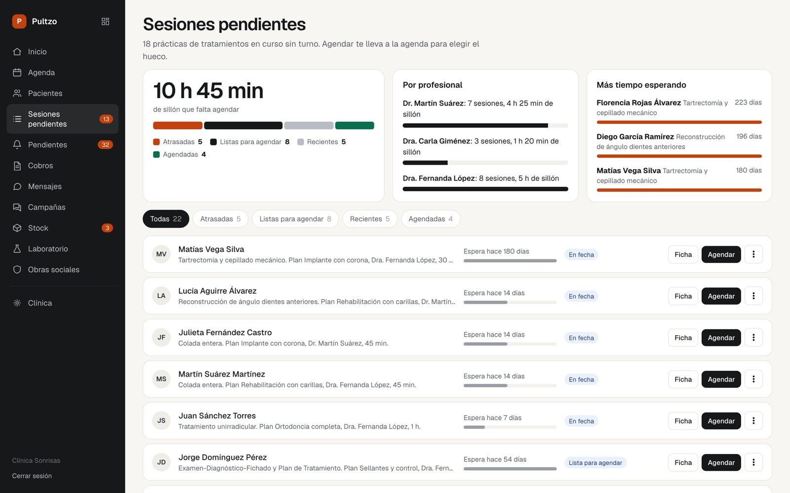
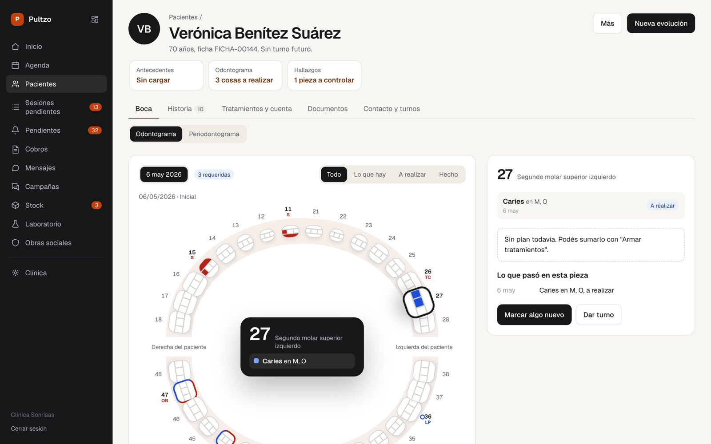

Pultzo
Pedí una demoVos atendés pacientes. Pultzo hace el resto.
Contesta WhatsApp, confirma turnos y te avisa lo que falta en tu clínica, también a la noche. Ver cómo funciona
Oficina de registros, Baltimore, 1937Ahora mismoHoy --:--
Y la clínica sigue abierta en tu teléfono.
Cuatro cosas que, a esta hora, todavía esperan a alguien.
- 21:14 · WhatsApp
40 mensajes sin leer
Pacientes que quieren turno, que quieren cambiarlo o que preguntan si atienden el sábado.
- 11:00 · Agenda
El paciente de las 11 no vino
No confirmó, nadie lo llamó y el sillón quedó vacío una hora.
- Viernes · Obra social
Vence la presentación del mes
Las prestaciones están en la agenda, en papel y en la memoria de alguien.
- Este mes · Tratamientos
Tratamientos a medias
Pacientes que empezaron un conducto y nunca sacaron la segunda sesión.
El papel.
Durante décadas, administrar una clínica fue una habilidad manual: fichas, cuadernos y la memoria de quien atendía el mostrador.
Toronto Telegram · York University · dominio públicoLa planilla.
La Macintosh puso ventanas y mouse en un escritorio común, y al año siguiente Excel nació en ella. Cada paciente pasó a ser una fila. Cada cobro, una celda.
Bernard Gotfryd · Biblioteca del CongresoEl software.
El sistema llegó a la clínica. Ordenó la información, pero no la entendió.
Bill Branson · National Cancer Institute · dominio públicoCambió la herramienta. El trabajo siguió siendo tuyo.
Con Pultzo, no.
Pultzo contesta los mensajes, ofrece turnos reales, recuerda las sesiones pendientes y te avisa lo que falta. Vos revisás y decidís.
Así se ve por dentro.
Pantallas reales con datos ficticios, ordenadas por lo que más plata le cuesta a una clínica.
El turno se reservó solo.
- El paciente escribe a la hora que quiere, también a las once de la noche.
- El asistente ofrece un hueco real de la agenda y lo confirma.
- Lo que no resuelve pasa a una persona, con la charla completa.
El día, medido contra el horario real.
- Recordatorios automáticos veinticuatro y tres horas antes del turno.
- Cuánto sillón libre le queda a cada profesional.
- La línea roja marca la hora actual.
Lo que te deben, a la vista.
- La presentación de cada obra social, armada con las prestaciones del mes.
- Lo que deben, por días desde que se presentó, y los débitos para refacturar.
- En cobros, la foto del comprobante se lee sola y una persona confirma con un clic.
Sin integración directa con las obras sociales por ahora.
Diez horas de sillón sin agendar.
- Tratamientos en curso que todavía esperan turno.
- Ordenados por profesional y por quién espera más.
- Un clic y pasan a la agenda.
Una boca, tres cosas por hacer.
- El odontograma en arcada marca lo que hay y lo que falta.
- Se dicta por voz, sin que la voz salga del consultorio.
- Lo escrito no se borra: se corrige con una entrada nueva.
Cuántos días de cobertura quedan.
- Cada práctica hecha descuenta sola los insumos.
- Lo que se termina esta semana aparece arriba.
- El pedido sale ya armado.
Tu clínica, en una sola mirada.
- Los pacientes de hoy, con su horario y su sillón.
- Los insumos para reponer antes de que falten.
- El trabajo que volvió del laboratorio. Cada etiqueta abre la lista exacta.




¿Lo querés ver con la agenda de tu clínica?
Pedí una demoLo que guarda Pultzo es una historia clínica. Lo cuidamos así.
La voz no sale del consultorio
El dictado de la historia clínica se procesa en la clínica. La grabación no viaja a ningún servicio externo.
Por WhatsApp, sólo turnos
El asistente habla de horarios y reservas. Nunca pide ni manda datos de salud del paciente.
La historia clínica no se borra
Lo escrito se corrige con una entrada nueva. Queda registro de quién cambió qué y cuándo.
La IA, con lo mínimo
Las integraciones de inteligencia artificial reciben sólo lo necesario y no se entrenan con tus datos.
Lo ponemos en marcha con vos.
No te damos un usuario y una contraseña para que te arregles. Pultzo lo hace y lo opera un equipo chico en Mar del Plata, y la misma persona que te da de alta es la que atiende cuando algo no cierra.
Toda revolución empezó con pocos.
Doce segundos en el aire y cinco testigos. Los primeros nunca fueron mayoría: fueron los que llegaron antes y se quedaron con la ventaja.
John T. Daniels · Biblioteca del Congreso · dominio públicoBuscamos diez clínicas fundadoras.
Todavía no tenemos testimonios para mostrarte. Preferimos decirlo y ofrecerte algo concreto. A cambio, te pedimos tu opinión.
- Los primeros meses, sin costo
- Alta y migración de datos incluidas
- Línea directa con quienes lo construyen
- Precio fundador cuando empiece a cobrarse
Lo que nos preguntan antes de la demo.
¿Cuánto cuesta?
Las clínicas fundadoras lo usan sin costo los primeros meses y después pagan un precio fundador, que queda fijo para ellas. El precio depende de la cantidad de profesionales y sillones; te lo pasamos en la demo, por escrito.
¿Cómo paso mis datos?
Lo hacemos nosotros. Nos pasás la planilla o la exportación de tu sistema actual y cargamos pacientes y turnos durante el alta.
¿Funciona con obras sociales?
Sí. Cargás los aranceles de cada obra social con su copago, y Pultzo arma la presentación mensual con las prestaciones del mes. Por ahora no hay integración directa con los sistemas de las obras sociales.
¿Qué pasa si el asistente de WhatsApp se equivoca?
Sólo ofrece huecos reales de tu agenda. Lo que no entiende o no puede resolver pasa a una persona de la clínica, con la conversación completa. Las campañas no salen sin que alguien de la clínica las apruebe.
¿Dónde están mis datos y quién los ve?
En infraestructura propia, no en una planilla compartida. Cada persona ve lo que corresponde a su rol: la recepción no ve lo mismo que el profesional. Las integraciones de IA reciben el mínimo necesario y no se entrenan con tus datos.
¿Sirve si trabajo solo en mi consultorio?
Pultzo está pensado para clínicas con varios profesionales y una recepción. Si trabajás solo, escribinos igual y vemos juntos si te sirve.
Créditos de las fotografías
Oficina de registros de la Social Security Board, Baltimore, 1937, Harris & Ewing, Biblioteca del Congreso, dominio público. Mostrador de trámites, Toronto, 1946, Toronto Telegram, York University Libraries, dominio público. Steve Jobs y la Macintosh, enero de 1984, Bernard Gotfryd, Biblioteca del Congreso, sin restricciones de copyright conocidas. Puesto de enfermería, 1987, Bill Branson, National Cancer Institute, dominio público. Primer vuelo de los hermanos Wright, Kitty Hawk, 17 de diciembre de 1903, John T. Daniels, Biblioteca del Congreso, dominio público. Las pantallas de Pultzo muestran datos ficticios.
Veinte minutos sobre tu clínica.
Te lo mostramos funcionando, con tus profesionales y tus horarios. Si no te sirve, te lo decimos.
O agendá el número: +54 9 223 541-2083